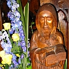

Saint Hélyi vînt en Jèrri au siêxième siècl'ye. Hélyi (en Latîn: Helerius) fut né à Tongres en Belgique, probabliément entre 510 et 520 AD. Il arrivit en Jèrri d'vièrs 535 - 545 AD. I' d'meuthit tchînze ans sus un rotchi et i' r'chut la couronne des martyres d'vièrs 550-560 AD. Ch'fut li tchi apportit la Chrêtchienneté en Jèrri. Les haches crouaîsies sus l'êtchusson d'la Pâraîsse d'St. Hélyi nos ramémouaithent tch'i' fut assâsinné par des pithates, et ainchîn d'vînt un martyre.
|  |  |
 |
 |
Dé La Pâssion d'Saint Hélyi
Au c'menchement du quatrième mais, Saint Marcouf donnit à Saint Hélyi la pèrmission dé d'meuther coumme hèrmite, et pouor m'ner chutte vie, i' lî suggéthit un lieu conv'nabl'ye tch'avait nom Jèrri. I' lî donnit étout un houmme tch'avait nom Romard pouor l'aîdgi duthant l'viage, et ch't' houmme-chîn fut san compangnon et s'n anmîn.
Romard et Saint Hélyi siûtent lus c'mîn à un cèrtain lieu tch'avait nom G'nêts, où'est qu'il embèrtchîtent sus un p'tit baté et arrivîtent souos la garde du Bouan Dgieu à l'île tch'avait nom Jèrri. I' n'y' avait qu'eune trentaine dé pèrsonnes des deux sexes. I' y' avait des rotchièrs par les côtes et sus iun d'ches rotchièrs Saint Hélyi rencontrit un houmme paralysé ès gambes teurses, tch'avait nom Anquétil, tch'i' dgéthit auve eune priéthe et eune bénédiction. La mémouaithe dé chu mithacl'ye est acouo mèrtchi sus l'rotchi.
I' y' avait étout un aut' rotchi entouôthé par la mé où'est qué l'Saint fit san liet. Ché n'tait pon un liet auve un pourpre mat'nas auve d'la brod'die, mais un creux dans la pièrre où'est qu'i' d'meuthait et donnait un mio d'èrpos à san corps châque jour.
La traisième anné auprès l'arrivée d'Saint Hélyi dans l'île, Saint Marcouf vînt l'vîsiter. I' l'trouvit lâssé et halé à eune telle m'suthe par ses vilyies et ses jeunées tch'i' n'fut pon aîsi d'l'èrconnaître. Quand i' lus èrvîtent, i' plieuthaient d'jouaie et i' lus embraîchaient auve les faches couèrtes dé lèrmes.
Duthant qu'Saint Marcouf restait siez Saint Hélyi, des pithates, v'nus d's Orcades, auve eune trentaine dé navithes, navidgîtent vèrs l'île.
Lé discipl'ye à Saint Hélyi les vit et couothit à san maît' et lî dit:
"Sav'ous qué j'sommes entouôthés par des pithates?"
Saint Hélyi s'êl'vit la tête et ouvrit ses ièrs lâssés par ses vilyies et vit la fliotte des pithates tchi 'tait à appraîchi. Pis i' vînt à Saint Marcouf et lî d'mandit tch'est qu'i' lus en allaient faithe.
Lé Saint rêponnit qu'i' lus fiêthaient ès armes d'la priéthe. Les deux Saints lus prostèrnîtent en priéthe, et d'mandîtent au Seigneur d'les saûver des pithates, ieux et l'habitants d'l'île. La mârrisson du ciel ainchîn d'cendit sus les pithates tchi lus mîntent à lus tuer. Et i' lus tuîtent si compliètement qu'pèrsonne n'restait des trais milles pouor rapporter la nouvelle dans lus pays.
Les deux Saints s'êl'vîtent d'lus priéthe et vîtent qu'il' avaient 'té sauvés d's enn'mîns, et r'mèrcîtent lé Bouan Dgieu tchi n'laîsse pon les cheins tch'ont l'espé en Li.
Trais jours auprès la libéthâtion d'l'île, Saint Marcouf et Saint Romard tchittîtent Saint Hélyi - et i' n'lé vèrraient pus janmais dans chutte vie.
Ainchîn Saint Hélyi et san discipl'ye restaient, sèrvant l'Bouan Dgieu niet et jeu. Saint Hélyi afflyigeait san corps et n'mangeait qu'eune fais par s'maine à seule fîn dé sé souôt'nîn pouor la glouaithe dé Dgieu. Mais i' tait tellement lâssé qu'i' n'pouvait pon aller pus liain dans un jour qu'nou pouôrrait j'ter eune pièrre. Tchînze ans auprès s'n arrivée dans l'île, lé Seigneur Jésû lî appathut et dit:
"Veins à mé, man chèr, auprès trais jours, tu tchit'tas chu monde couronné d'sang"
À sinne dé jeu, auprès l'èrtithant d'la mé, san discipl'ye vînt à li s'lon sa couoteunme. Lé Saint lî dit chein tch'il avait ouï. Lé disciplye 'tait tout dêsolé et triste. Lé lend'main, souos les vents d'amont, les Vandales arrivîtent auve eune grande fliotte et envahîtent l'île entchiéthe.
Saint Hélyi s'muchit pa'ce qu'i' tait lâssé, pas pa'ce qu'il avait peux d'la mort. Mais par lé d'si du Bouan Dgieu, i' fut trouvé par les Vandales grâce à la tuit'tie d's ouaîsieaux. En l'viyant, i' criyaient qu'i' tait fiévreux. Mais iun dg'ieux prînt san sâbre et lî copit la tête. Nou peut vaie achteu l'sang sus l'rotchi et nou l'vétha sus la tèrre à tout janmais. Les pithates, ayant tout saccagi, lus en allîtent.
Lé discipl'ye vînt sus la grève et trouvit san maît' dêcapité auve sa tête dans ses bras, l'ayant portée la siêxième partie d'un d'mié-mille du rotchi à la tèrre. I' viyait l'mithacl'ye qu'lé Bouan Dgieu fait pouor ses martyrs par l'pouver dé Dgieu et d'ses Saints, et i' fut êtonné et louangit lé Seigneur. Ainchîn i' prînt l'corps et la tête d'san maît' et les mînt dans un p'tit baté, ayant peux qu'les pithates né r'vînssent pouor profanner lé corps du Saint, et i' s'assiévit dans l'baté auprès d'la tête d'san maît'. Mais i' tait lâssé par la tristesse et la peux et i' s'endormit. Mais, înspiré par la grâce dé Dgieu, lé p'tit baté, sus eune haute mathée et entouôthé d'grands louêmes, fut porté par les couothants à eune ville tch'avait nom Hereuarde, où'est qu'les riviéthes Meuse, Rhîn et Wahal lus joignaient. Quand l'discipl'ye s'êvilyit, i' fut êtonné d'vaie qu'tout ch'qu'i' y' avait entouor li 'tait înconnu - excepté l'baté. et les gens du pays tchi l'vîtent, criyaient qu'i' tait un r'vénant. Mais auprès qu'lé discipl'ye lus explyitchit, i' fûtent remplyis d'jouaie. Nou's-am'nit Saint Willebrode, lus êvêque, au bâté à seule fîn qu'i' pûsse vaie et saver tch'est qué ch'tait. Ayant apprîns l'histouaithe, i' fit porter lé corps d'Saint Hélyi auve grand soin et grande jouaie à Stovenas, et là i' fut entèrré dans un nobl'ye mausolée lé dgiêx-sept des Calendes d'août. Et par ses priéthes, des mithacl'yes ont 'té accomplyis par l'Bouan Dgieu à la glouaithe et l'honneu dé Dgieu, à tchi est l'honneu et la glouaithe jusqu'ès âges des âges.
Amen
Jé cêlébrons sa vie lé 16 d'Juilet châque année auve un pélerinnage annuel d'l'Églyise Pârouaîssiale d'St. Hélyi, au mitan d'la Ville, à la grève, par sus l'pont et jusqu'à l'Hèrmitage tchi fut bâti sus la pliaiche où'est qu'St Hélyi d'meuthait.

Viyiz étout: